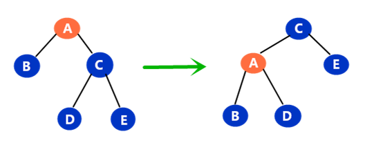
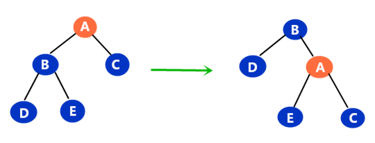
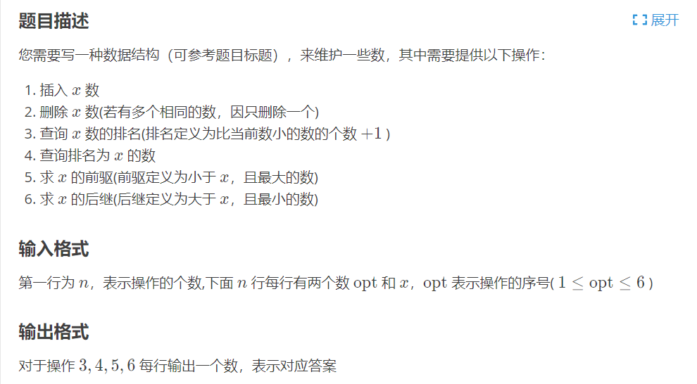
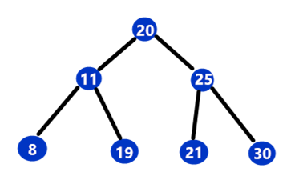
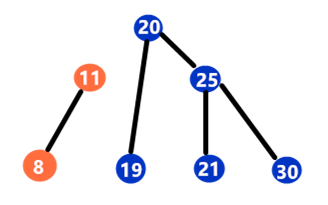
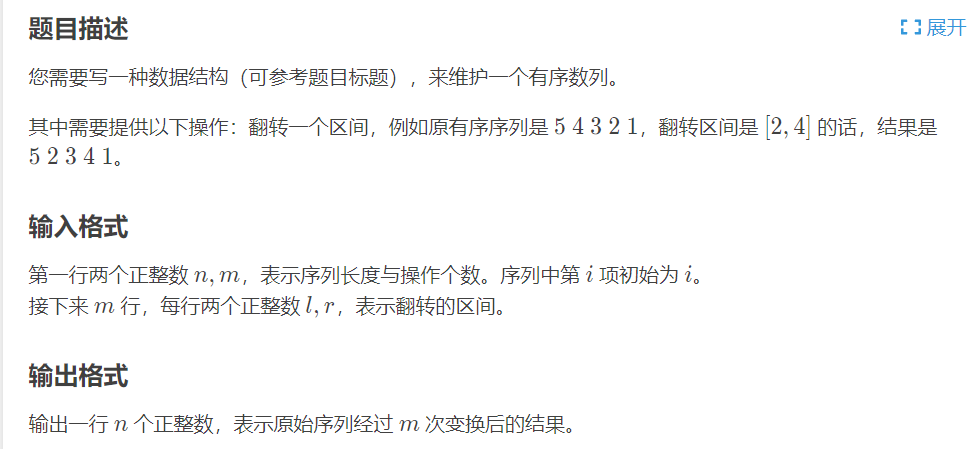

Treap
Treap是由Tree和Heap一起组合而成的数据结构，是一种平衡二叉搜索树。每一个数由一个二元组<val, key>表示，其中val表示数的值，而key存储的是一个随机值，Treap对于val来说满足二叉搜索树的性质，对于key来说满足堆的性质(但不满足完全二叉树这一性质)。
为什么二叉搜索树要结合堆的性质呢？在按照1、2、3、4、5这个顺序插入构成一颗二叉搜索树的时候，会退化成一个链表，所以我们给每一个结点加一个随机值，然后随机值满足堆的性质，这样就可以避免最坏情况，使得树基本平衡。
数据结构定义
1 | // val重复的在一个结点记录，由cnt表示， size表示以该结点为根的子树的大小，son[0]表示左儿子，son[1]表示右儿子 |
更新
因为Treap是通过旋转操作来维护树的平衡的，所以需要更新一下结点的size值
1 | void pushup(int p) { |
旋转
普通的Treap是通过旋转操作来维护树的平衡的，先来了解一下旋转操作吧。
左旋
对A结点进行左旋，以A结点的右儿子为轴，A结点左旋。

右旋
对A结点进行右旋，以A结点的左儿子为轴，A结点右旋。

代码
1 | // d = 0表示左旋，d = 1表示右旋 |
插入
1 | void insert(int &p, int x) { |
删除
1 | void del(int &p, int x) { |
获取排名
排名定义为比val小的数的个数+1
1 | int getrank(int p, int x) { |
根据排名获取值
1 | int getnum(int p, int x) { |
获取前驱
前驱是比val小的最大值
1 | int getpre(int p, int x) { |
获取后继
后继是比val大的最小值
1 | int getnxt(int p, int x) { |
洛谷P3369
模板题洛谷P3369

1 | // 输入样例 |
1 |
|
无旋 Treap
无旋Treap也叫fhq Treap，是由范浩强发明的数据结构，顾名思义，无旋Treap不需要旋转操作便能维护树的平衡，主要是通过分裂和合并两个操作。
数据结构定义
1 | struct node { |
创建新结点
1 | int newnode(int val) { |
更新
更新操作与普通的Treap相同
1 | void update(int now) { |
分裂
分裂主要有两种方式
- 按值
value分裂，将树分为两颗，一颗树上的val小于等于value，另一棵树大于value - 按大小
sz分裂，将一颗子树分为sz大小，另一颗子树为n-sz大小
这里先讲按值分裂，按大小分裂之后会结合例题看。
假设有下面这样一颗树

我们对它按值17进行分裂，得到的结果如下

1 | // 当前结点序号为now，按照val分裂，分裂成两颗子树，根节点为x和y，因为x和y的值会改变，所以传引用 |
合并
合并操作就是分裂的逆操作，将两颗子树合并为一颗。
1 | // 两颗子树的根为x和y |
插入
1 | // 先按照val进行分裂，其中x子树小于等于val |
删除
1 | // 先按照val进行分裂，分为x和z子树，其中x子树的值小于等于val |
获取排名
1 | // 按照val-1分裂成x和y子树，返回x子树的size+1即可 |
根据排名获取值
1 | // 与普通Treap没什么两样 |
获取前驱
1 | // 将树按照val-1进行分裂，然后返回x子树最右边的值即可 |
获取后继
1 | // 按照val进行分裂，再返回y子树最左边的值 |
洛谷P3369
对于上面的模板题，通过无旋Treap的解法如下
1 |
|
无旋Treap维护区间信息
无旋Treap还能和线段树那样维护区间信息，结合例题来看

1 | // 样例输入 |
对于这种反转问题，暴力去翻肯定是会超时的，结合线段树lazy tag的思想，通过标记区间翻转标记，来降低时间复杂度。为了解决这个问题，无旋Treap将按大小进行分裂
数据结构定义
1 | struct node { |
标记下传
因为Treap在分裂和合并的时候，有可能改变结点的位置，所以我们需要将reverse标记下传，以防丢失信息
1 | void pushdown(int now) { |
分裂
1 | void split(int now, int sz, int &x, int &y) { |
合并
1 | // 分裂只需要加一步标记下传即可 |
反转
1 | // 将树按照l-1大小进行分裂，其中y子树的大小为n-l+1 |
AC代码
1 |
|